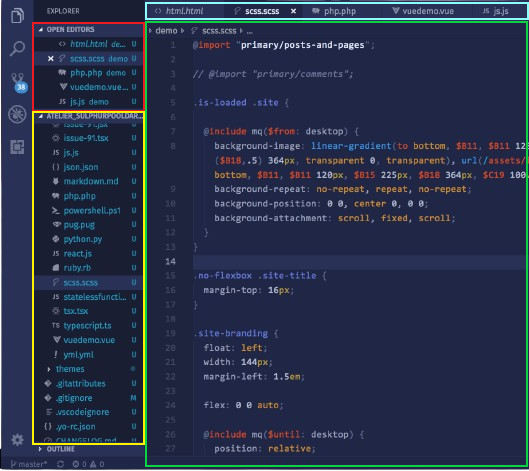
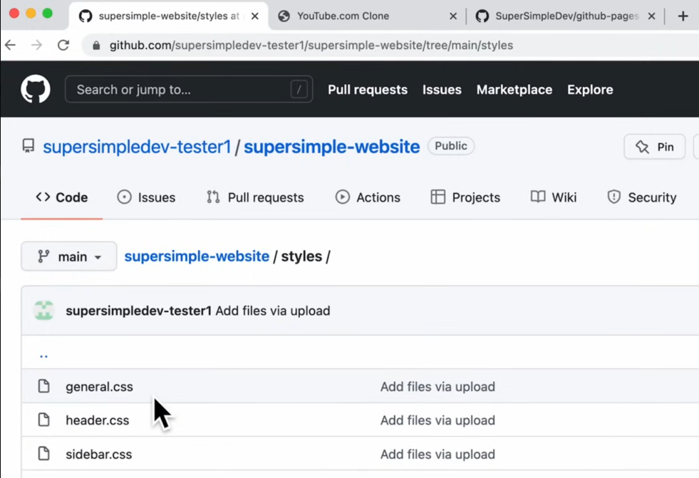

Quels sont les outils nécéssaires au développement d'un site web?
Un éditeur de code
C'est l'outil qui vous permettra d'écrire votre code. Généralement on veut utiliser des éditeurs qui facilite notre travail (par exemple, qui font certaines choses automatiquement pour nous). Par convention, on utilise souvent l'éditeur nommé « Visual Studio Code », puisqu'il possède beaucoup de fonctionnalités pratiques.
En savoir plus ↓
Un domaine Web
Le domaine Web est souvent connu comme le « lien » du site web, mais il représente aussi l'endroit oû le site web se situe sur l'internet même. Pour obtenir un domaine, il y a des sources qui sont gratuites et d'autres qui sont payés, chacuns ayant leurs avantages et inconvénients. La source la plus connu pour ceci est « Github » .
En savoir plus ↓Des sources de décorations
Il est très important de décorer votre site web afin de le rendre plus attrayant auprès de vos utilisateurs. Afin de faire ceci, on utilise souvent des images, on utilise des polices de caractères typiques aux sites web (ex: Roboto, la police de caractère utilisé sur YouTube, ou Montserrat, une police très populaire grâce à son design moderne)
En savoir plus ↓a

Visual Studio Code
On dit souvent juste VSCode, et c'est le logiciel le plus utilisé pour éditer du code. On peut observer à droite une image qui démontre l'apparence de ce logiciel lors de son utilisation. Lorsqu'on créé du code, on veut souvent séparer notre code selon le langage utilisé dans chaque document. En rouge, on peut voire tous les onglets qui sont ouvert, et on peut changer d'onglets facilement en utilisant la barre encadré en bleu, comme vous le faites souvent sur Google ou Safari, ou n'importe quel autre navigateur. En jaune, il y a tous les éléments qui font partie du dossier de votre projet sur lequel vous travaillez actuellement. Finalement, c'est dans l'endroit en vert que vous allez écrire du code, comme vous ferez avec Word ou Google Docs, mais selon un langage de code et non du français/anglais. Une autre raison qui rend VSCode si utilisé est le fait qu'il y a une grande bibliothèque d'extensions qui peuvent faciliter au codage. La façon dont j'ai découverts les éxtensions étais lors d'une video d'introduction pour HTML, qui se trouve dans mes sources.
a

Github, pour un domaine gratuit
Afin d'avoir un site web qui peut être accéder par n'importe quel ordinateur, il faut avoir un nom de domaine (ou « domain name » en anglais). Essentiellement, le domaine est le lien par lequel les gens peuvent chercher votre siteweb. Par contre, pour obtenir un domaine il faut payer à peu près 20$ par année. Afin d'éviter cela, vous pouvez vous rendre sur un site web comme Github, et créer un dépôt, oû vous metterez tous vos fichiers pour le site web, comme vous pouvez voire sur l'image à gauche du texte. Il est important de savoir que lorsque vous créer votre page principale pour le site web, on le nomme généralement « index.html », puisque c'est le premier fichier que votre Chrome ou Safari cherche (donc si votre utilisateur cherche www.exemple.com, la page s'ouvrira directement à www.exemple.com/index.html.
a
Les décorations importantes
Lors de la création d'un site web, on veut généralement utiliser des
polices de caratères plus connus. La majorité de ces polices se trouvent
sur Google fonts, qui contient une très grande sélection dépendament de
vos goûts.
D'autre part, il est très important d'apprendre comment organiser un
site web. Il y a quelques règles généraux, comme par exemple de garder
des couleurs différentes entre chaque sections, d'organiser les pages
selons les idées, etc. De plus, je vous recommende d'aller voir
plusieurs site web afin de voir quelques concepts qui sont en communs,
et même si vous n'avez pas d'inspirations.
Finalement, beaucoup de site webs possèdes des images qui ne sont pas
vraiment en lien avec leurs thèmes, mais simplement afin de paraitre
plus décorés. Si jamais vous souhaitez faire la même chose, vous pouvez
vous rendre sur Stock images.